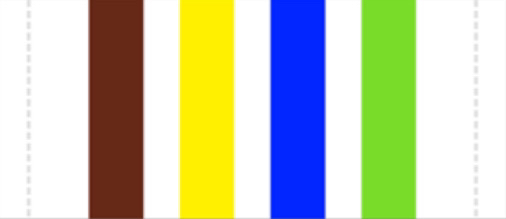

In TNTT there are 4 different levels of youth leaders. Each have their own unique levels of credentials that allow them to be elegible to be voted into higher positions.
Cap 1
Cap 1 is the most basic level of youth leaders. At this level you are able to teach lessons as well as aid in the chapters summer camp.
Youth Leader Scarf
Cap 2
Cap 2 is the next level after cap 1. In order to become cap 2 you need to attend at least 1 training camp at the level of cap 2. After completing this training you are now able to become 1 out of the 4 age group leaders as well as help in regional training camps.
Cap 2 Au Nhi PatchCap 2 Thieu Nhi PatchCap 2 Nghia Si PatchCap 2 Hiep Si Patch
Cap 3
Cap 3 is the highest level of youth leader. After completing the training camp for this level you are now able to become a chapter leader as well as take on small roles for your region.
Chapter Leader Shoulderstrap Regional Leader ShoulderstrapNational Leader Shoulderstrap

Age Group Leader Shoulderstrap
Huan Luyen Vien
Becoming a Huan Luyen Vien or youth leader trainer is the most
prestigious of the 4. With this you are able to take on the highest
positions within your region as well as take on roles on the national
level. As a HLV you are able to lead the training camps for cap 1-3.
There are also 3 different levels of HLV